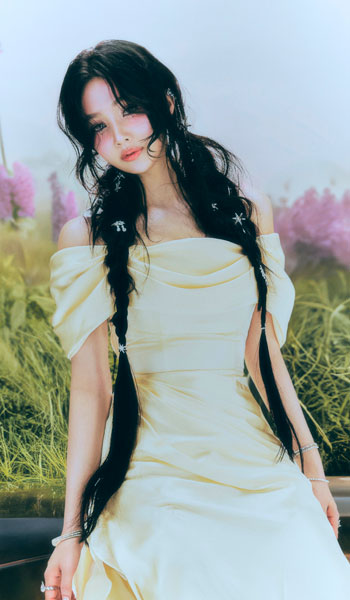
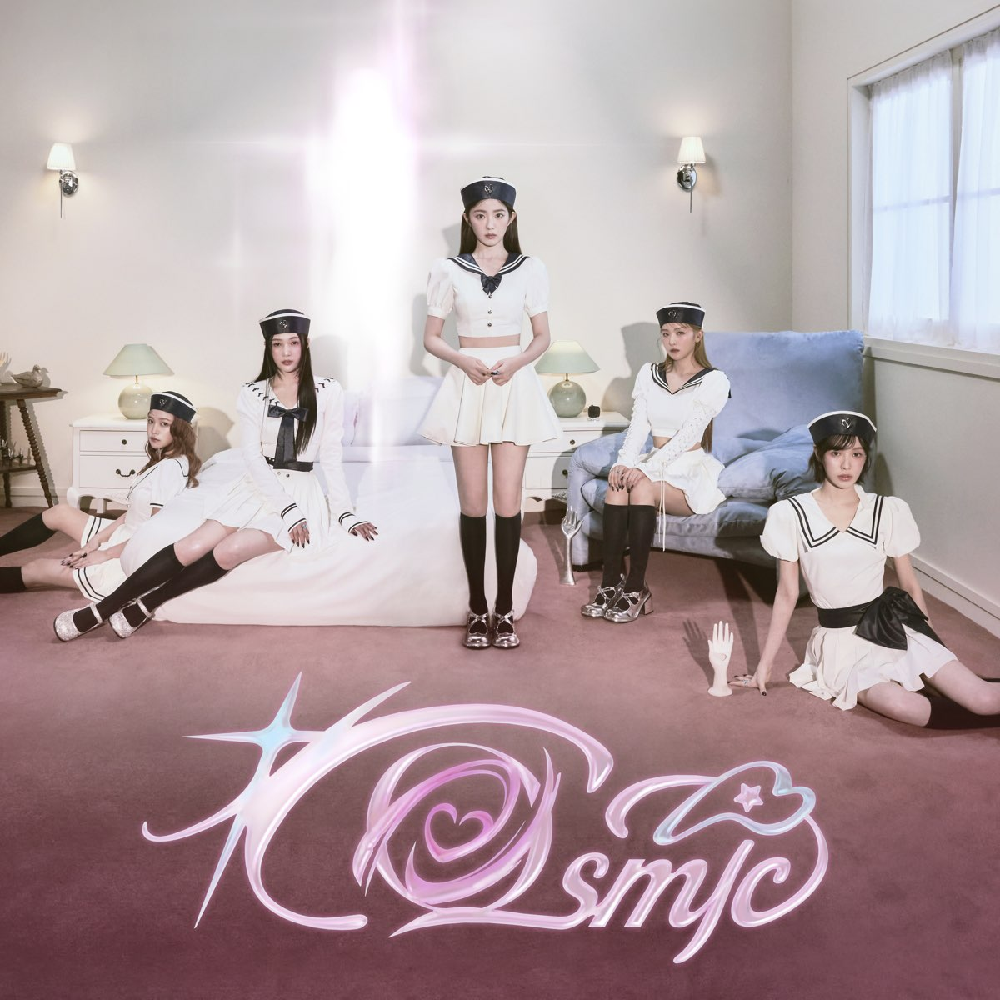

Inicio

Biografía
Red Velvet debutó el 1 de agosto de 2014 con su sencillo digital «Happiness» y cuatro miembros: Irene, Seulgi, Wendy y Joy. Una quinta integrante, Yeri, fue añadida el 11 de marzo del 2015.
Desde su debut, Red Velvet ha obtenido éxito y reconocimiento. Su primer miniálbum, Ice Cream Cake, encabezó la lista de álbumes de Gaon a principios de 2015. De forma similar, el primer álbum completo de estudio del grupo, The Red (2015) y los otros miniálbumes, The Velvet, Russian Roulette, ambos publicados en 2016, y Rookie (2017) alcanzaron el primer lugar en Gaon Album Chart. Además, The Red, Rookie y The Red Summer (2017) también encabezaron los Billboard World Albums, y con el lanzamiento de su segundo álbum de estudio Perfect Velvet (2017), se convirtieron en el grupo de chicas de K-pop con la mayor cantidad de álbumes en la lista y empatando con otros actos de K-pop. Red Velvet ha recibido premios al «Mejor nuevo artista» en los Golden Disk Awards y los Seoul Music Awards, además de premios por sus coreografías en los Melon Music Awards y en los Mnet Asian Music Awards.
Integrantes
Irene (아이린)
Fecha de nacimiento:29 de marzo de 1991
(Líder, rapera principal, bailarina, sub vocalista)
Seulgi (슬기)
Fecha de nacimiento:10 de febrero de 1994
(Bailarina principal, vocalista líder)

Wendy (웬디)
Fecha de nacimiento:21 de febrero de 1994
(Vocalista principal)

Joy (조이)
Fecha de nacimiento:03 de septiembre de 1996
(Rapera líder, sub vocalista)
Yeri (예리)
Fecha de nacimiento:05 de marzo de 1999
(Sub vocalista, sub rapera, maknae)
Conciertos

"Red Room" (2017-2018)
"REDMARE" (2018)
"La Rouge" (2019)
"R To V" (2023)
Último lanzamiento
Red Velvet 레드벨벳 'Cosmic' Music Video
Ice Cream Cake (2015)
The Red (2015)
Perfect Velvet (2017)
The ReVe Festival 2022: Feel My Rhythm (2022)
Chill Kill (2023)
